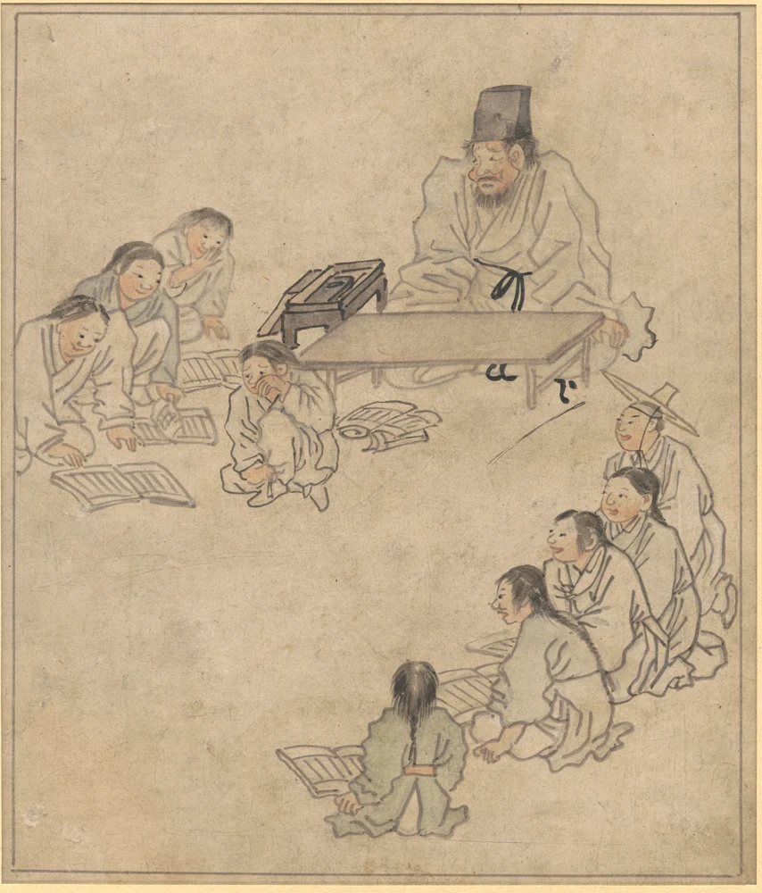

한국 문화유산 웹전시 · 만 14세 이상
옛사람들의
눈에 비친 아이들
옛사람들은 어린이를 어떻게 바라봤을까요?
여섯 작품의 표정과 자세, 무늬를 단서로 당시의 생활과 가치관을 살펴보세요.

작품 목록
여섯 작품 속 아이들
그림, 도자기, 나무 조각에서 어린이의 모습이 어떻게 달라지는지 비교해 보세요.
한국 문화유산 웹전시 · 만 14세 이상
옛사람들은 어린이를 어떻게 바라봤을까요?
여섯 작품의 표정과 자세, 무늬를 단서로 당시의 생활과 가치관을 살펴보세요.

작품 목록
그림, 도자기, 나무 조각에서 어린이의 모습이 어떻게 달라지는지 비교해 보세요.